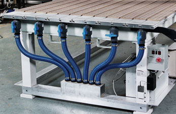
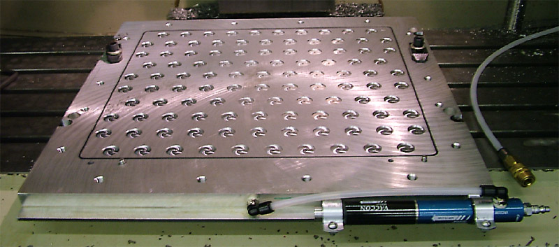
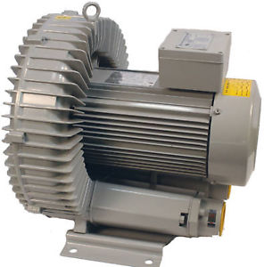
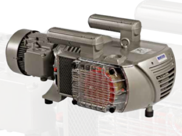
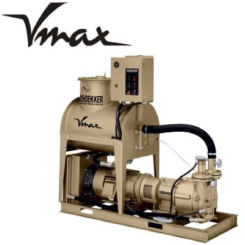
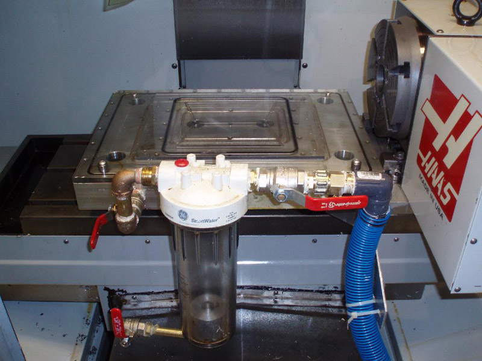
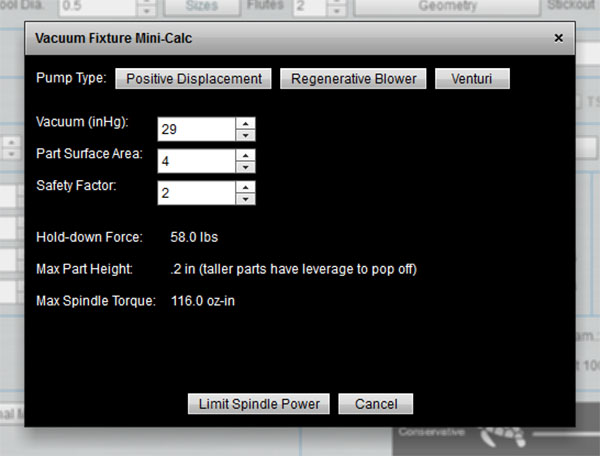
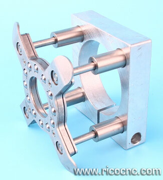

Total Guide to CNC Router Vacuum Tables
Introduction

Vacuum Table with zoned sub-plenum plumbing. Image via Techno-CNC...
Vacuum Tables are often the best solution for the flat sheet work often being done on CNC Routers. You can lay an MDF spoilboard right on top of a vacuum table and it's porous enough to still pull a vacuum. Granted, unless you have a lot of vacuum available, you may want to seal part of the spoil board so the area receiving the vacuum is limited. Vacuum tables can be set up with zones that can be turned on and off with valves as well.
Vacuum Table Basics
Vacuum Tables generate hold-down force because of the difference between a vacuum under the part and atmospheric pressure pushing down from above. Every square inch of area exposed to that difference can have a force as much as 14.7 lbs pushing down on it (the difference between 0 and sea level air pressure).
The hold-down force is proportional to that pressure difference and the surface area exposed to the difference. A large area on a large part can have significant force. A 10" x 10" square part potentially has 100 square inches times 14.7 lbs per square inch or almost 1500 lbs of holding force!
Meanwhile, small parts have much less force holding them down. It's important to be aware of that difference.
Another way force can be limited is you may not be able to apply the vacuum to the entire bottom surface of the part. Consider a vacuum system built out of aluminum with small vacuum chambers underneath. It looks something like this:

Vacuum table with small chambers...
Now in order to keep the part flat, and not bowed, we want it to sit flat on the aluminum. We may not get much vacuum anywhere except where the chambers are. In that case, it is the surface area of the chambers and not the surface area of the part that will determine the hold-down force, and that's much less than the surface area of the part.
Most CNC Router Vacuum Tables avoid this problem by using an MDF board atop the vacuum table to spread the vacuum. MDF is porous, so vacuum goes everywhere. This works well, but it does require a vacuum pump that can pull a greater volume of air through because the MDF will leak wherever there's not something lying on it.
Just as MDF can be used to spread the vacuum, your part may leak vacuum if it is made of anything permeable (foam board, MDF, that sort of thing) or if you introduce too many through holes into it during the machining.
The last thing to know is that there are two forces trying to upset the part on the vacuum table. One is side-force and the other is up-force. Side force is a function of friction between the part and what it is laying on. Be sure the vacuum table surface is not too slippery to provide holding against side force. Most of the time, the coefficient of friction will be such that it takes at least twice the force to move the part sideways as it does to lift the part.
The up-force needed to overcome the holding force is just a function of the weight of the part plus the hold-down force due to vacuum. If the part is lifted even a little, perhaps not enough you can see, you'll leak vacuum and unless your vacuum pump has a lot of capacity, the part will soon pop off as vacuum drops. If the up-force is enough, the part could even be flung across the table.
Vacuum Pumps
The heart of the vacuum system is the vacuum pump. There are several kinds available. A "Regenerative Blower" is typically a centrifugal impellor type:

A typical Regenerative Blower for use as a CNC Router Vacuum Pump...
Regenerative Blowers are capable of moving a lot of air (CFM = Cubic Feet Per Minute), but they won't pull as strong a vacuum. The strength of the vacuum is measured in inches of mercury, often abbreviated as "Hg". -30 Hg is 0 pressure--a perfect vacuum. -15 Hg is about half normal air pressure. At sea level, air pressure is 14.7 pounds per square inch, so -15Hg would be about 7.4 pounds per square inch. A typical regenerative blower might generate say 4 to 5 lbs per square inch (8 to 10Hg) versus one of the other types that can generate the full 14.7 lbs per square inch. As you can see, given the same CFM capacity,. these other vacuum pump types can clamp the work significantly harder. Or, looked at another way, they can apply the same force to much smaller parts.
Another way to think about it is the amount of vacuum (Hg) determines how hard the part is held down while the CFM capacity is used to deal with leaks. You either need enough CFM for all the leaks or you need to spend more time controlling the leaks.
Other types of vacuum pump include rotary vane and liquid ring pumps, which can pull a stronger vacuum, but to get the large volume of air will cost more:

Rotary vane oil-less vacuum pump...

Liquid-ring vacuum pump...
The strength of the vacuum determines how much of the air pressure is actually going to work to hold down your workpieces. Less vacuum means less pressure. But you have to trade that off against the CFM capacity. If you are leaking a lot of the vacuum, more CFM capacity is needed to keep the vacuum low enough to do its job.
Vacuum Tables face a trade off between the amount of vacuum they can pull with their vacuum pump, leakage (which is working to reduce the vacuum), and the surface area of the part that the vacuum can act on. Big flat parts don't need as much vacuum as small parts. The less powerful your vacuum pump, the more time you'll spend trying to stop leakage so that enough vacuum is left for the parts. The smaller the surface area on the parts, the more vacuum is needed to keep them solidly in place.
How large a vacuum pump do I need for my CNC Router table?
The bigger the table, the more pump. A rule of thumb is 25 HP on 4 'x 8' table and 40 HP on 5' x 10'. That rule of thumb leaves aside the issue of how much vacuum the pump can pull--a regenerative blower in that range is a lot cheaper than a rotary vane type. Are there tables with lower HP pumps? Absolutely! But the lower the HP, the more problems you'll have with leaks and small parts. On a 4' x 8' table, 12 HP is about the minimum for good performance.
The thing is, too small a vacuum pump means extra work every time you run the CNC Router to deal with leaks, work around parts breaking loose, and possibly even engineering other workholding solutions. It's worth it not to skimp on your vacuum pump!
In addition to HP ratings, consider the CFM rating. A pump will be rated on two dimensions--how much vacuum can it pull (i.e. how low a pressure) and how much air can it move to offset leaks. A leaky vacuum system with 4' x 8' MDF spoilboards needs 200 CFM or more to offset the leaks. The more you can seal up the leaks, the lower the CFM you can get by with.
Can a vacuum pump be too large? What about multiple pumps?
Now you're on to something. If you run more vacuum than you need, you're wasting the cost of the pump. For these situations, it may make sense to have two smaller-capacity pumps. Run one when parts are large enough they don't need maximum vacuum for hold down--remember, hold-down force is proportional to surface area and larger parts are held more securely. Fire up the second pump for small parts.
Let's suppose you can't afford a big expensive vacuum pump, are you just out of luck? Not at all! See below for how you can use our G-Wizard software to prevent part pop off even so.
Liquid Separators
Are you using coolant with your vacuum table (hint: most CNC Routers won't)? If so, you need a liquid separator. Sending coolant back to your vacuum pump is a bad idea for most vac pumps. A liquid separator can be very simple--just a tank that dumps down vertically from the top and pulls vacuum off the top. Very little liquid will be pulled from the bottom of the tank where it pools. Such a system will need a sight glass or other means of telling when it's time to drain the fluid out before continuing.

Simple Liquid Separator or coolant trap made from a water filter cannister. This one is fairly low capacity so suitable only for smaller vacuum fixtures, but it is easy to see when it is getting full...
Vacuum Table Part Pop-Off
When cutting forces exceed the hold-down force a vacuum table can pull, the part pops off and is generally ruined. This is a common problem for vacuum table users, especially for smaller parts that don't have much surface area and for users that may have limited vacuum pump capacity.
Until now, fixing the problem has been hit or miss, but our G-Wizard Calculator software now has the ability to limit cutting forces to what your vacuum table can handle. For more information, check out our article on this special feature:

G-Wizard has a built-in facility to limit cutting forces to avoid vacuum table pop off...
Tips for Vacuum Table Usage
- When planning to cut a bunch of nested parts, it can be helpful to plan the cut strategy to preserve surface area and connection to overall workpiece for as long as possible to make the workholding easier. It also pays to experiment with Climb versus Conventional Milling because the direction of the cut together with exactly the order the part's edges detach from the overall board may play a roll in whether it gets kicked lose towards the end of the cut. One approach to this is called "Onion Skinning." It's the practice of climb milling until you get down to a very thin layer left before cutting all the way through. Switch to conventional milling to get rid of the last little bit. If you still have parts being kicked loose, even try a smaller diameter cutter for the final cut--it's all about reducing cutting forces and maintaining as much vacuum as possible right up until the very end.
- Software generated tabs are also very helpful with parts that are too small to be held tightly by vacuum alone. They'll allow the surface area of adjacent parts and workpiece material to help hold down the part. Some CAM software like MeshCAM can automatically generate the tabs for you.
- Keep your spoilboard clear of dust and debris. Dust picks up the part, encourages leaks, and acts as a ball bearing to make the part slide around on the dust particles. None of that is helping.
- Fly cut 50 thousandths or so off the top (and bottom if you can) of the MDF spoilboard. The top and bottom are denser due to the manufacturing process for MDF and flycutting away the densest material will allow the air to pass through the spoilboard more easily.
- Here's another tip: minimize the cut-through or extra depth of cut extending below the part into the spoilboard. This will reduce the leakage compared to deeper channels cut into the spoilboard.
- Sometimes the spoil board is flowing air a little too freely and your pump can't pull enough vacuum. Stack two boards to reduce the airflow and you may find you get better grip. In addition, the top board can be thinner and replaced more cheaply when it gets cut up enough.
- While the table/plenum edge may have a gasket to prevent leakage around the edge of the spoilboard, you may find you can reduce leakage even further by taping the edge to get even more vacuum.
- Leak detection: You can purchase an ultrasonic leak detector that will find leaks in your vacuum system's plumbing that are robbing your system of performance. Don't want to spend the money on a leak detector. Wrap things with plastic cling wrap (Saran wrap). It won't last, but you'll see pretty quickly where the film is being sucked down by a vacuum leak.
- Sometimes it's more economical to run two vacuum pumps of smaller capacity rather than one large one. Run one of the small pumps for big boards and parts with a lot of surface area for clamping. Fire up the second pump for problematic small parts that don't have enough surface area.
- Use 1/4" ply or other materials sandwiched between the MDF spoilboard and the vacuum plenum to block airflow to specific zones. The ply is not as porous as the MDF.
- If you're having a hard time holding down porous material (your whole workpiece is one big leak!), consider laying a sacrificial piece of non-porous over the top.
- Consider a spindle pressure foot to help add more hold-down force on the part. A pressure foot rolls along the part using ball bearings but adds spring-loaded hold-down force around the immediate cutting area. Here is one example:

Pressure foot clamps to spindle. Image via RicoCNC.com...
- Beware of leaks, but also beware of flow restrictions in the vacuum plumbing, especially if you're running a powerful vacuum pump.Gasketing can help minimize leaks by channeling the vacuum to where it is needed and blocking edge leaks. Kinks in hoses are prime soources of flow restriction, but there can be others as well.
- It's often helpful to be able to manage the available vacuum by parceling it out to zones on the vacuum table using valves or other mechanisms.
- Need to flip parts on a vacuum table and keep things lined up? You'll need to provide some way to align the parts. Dowel pins are a common solution. Either put holes in the parts and table (sacrificial MDF bleeder board only!) that match up with dowel pins for alignment, or arrange the pins to act as work stops against the part sides. Using the part sides only works if the part is symmetrical so flipping it will still line up against the same stops. But if you can use pins in holes in the part, you can arrange the holes to be symmetrical regardless of the part shape.
- What if your parts are shifting or sliding on the table without picking up? This can cause problems, but there are a variety of solutions. You could use the tabs described above. You could use dowel pins as stops against the sides to stop the sliding. You could use a sticky but porous mat material between the part and table to make it harder to slide. Or lastly, you could leave a thin layer of material when cutting out the parts that preseves the vacuum. When all the cutting is done except for the thin material, go back and finish cutting through it. Because the material is so thin, cutting forces will be much smaller and you'll be less likely to slide the part around.
- Resurface the sacrificial bleeder board every now and then to keep it flat. When it gets too thin, replace it with another bleeder board.
- A clever trick from one of our CNCCookbook readers to keep acrylic letters from popping off his vacuum table:
I'm working on a 4'x4' CNCRouterParts machine. I purchased the basic model, and have added to over time. I'm using a Bosch router rather than a spindle - being in the garage in Alberta it seemed like the best choice.
Anyways, I've been cutting type out of acrylic. To aid with hold down I made a vacuum table, using a shop vac as the pump, and it has served me well; however, despite the use of dial indicators and surfacing I haven't quite gotten the z accuracy down to the 0.003 that it requires in order to use the plastic backing on the acrylic as a fixturing aid. If the bit is just too high I end up with an edge around some of the type. If the backing is cut, vacuum is lost, little parts fly around the garage, the vacuum table surface is marred, etc.
Recently I discovered a way to alleviate my troubles. I cut the panels from a cereal box, and using spray glue I affixed them to the plastic backing of the acrylic - in essence, creating a cardboard spoilboard. The cardboard is thick enough that I can cut into it without cutting through it. I glued the plastic to the raw side, and used the coated side to aid with achieving a solid vacuum hold. Problem solved.
The cardboard has very little flex, but it is enough that the plunge speed may need to be adjusted so it doesn't 'pop' the bit as it pushes through, possibly fracturing the material being cut.
Can I Build My Own Vacuum Table?
Okay, so you love the idea of a vacuum table for your CNC Router. Who could blame you? They're super convenient and easy to use with just a little care. Just one problem, you bought a CNC Router that doesn't have a built-in vacuum table, or if it was an option, you didn't choose it.
Is it too late? Do you need to buy a different CNC Router just to get a vacuum table?
Good news, you may be able to buy or build a vacuum table. Check out our page:
Total Guide to DIY Vacuum Tables